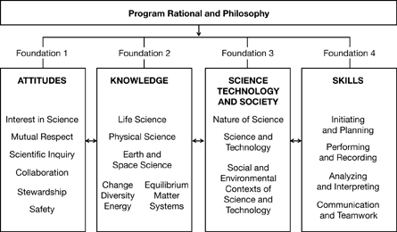
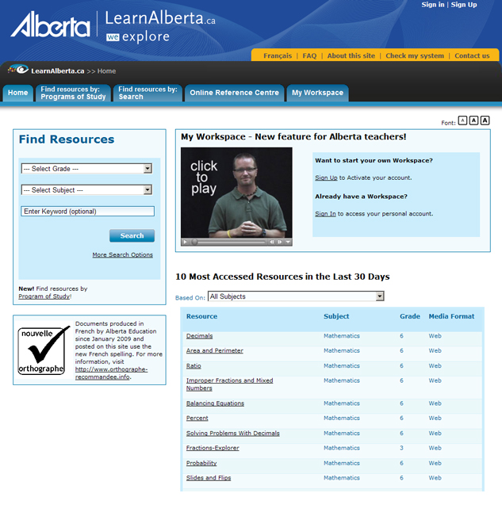

Chemistry 30 Textbook and Website Support
Learning in an Online Environment
Alternative Learning Environments and Distributed Learning
Instructional Design
– Explanation
– Components
Special Learning Activities: Labs and Simulations
Using the Chemistry 30 Course Folder
In Chemistry 30 you will learn more than facts. You will be encouraged to develop positive attitudes and to acquire and use knowledge and skills in responsible ways. Your studies will lead you to achievements in each of the following four areas prescribed by the Alberta Program of Studies.

Attitudes—Students will be encouraged to develop attitudes that support the responsible acquisition and application of scientific and technological knowledge to the mutual benefit of self, society, and the environment.
Knowledge—Students will construct knowledge and understandings of concepts in life science, physical science, and Earth and space science and apply these understandings to interpret, integrate, and extend their knowledge.
Science, Technology, and Society (STS)—Students will develop an understanding of the nature of science and technology, the relationships between science and technology, and the social and environmental contexts of science and technology.
Skills—Students will develop the skills required for scientific and technological inquiry, for solving problems, for communicating scientific ideas and results, for working collaboratively, and for making informed decisions.
This course builds upon the scientific concepts from
Grade 7 Science, Unit C: Heat and Temperature
Science 8, Unit A: Mix and Flow of Matter
Science 9, Unit B: Matter and Chemical Change
Science 9, Unit D: Electrical Principles and Technologies
Science 10, Unit A: Energy and Matter in Chemical Change
Science 10, Unit D: Energy Flow in Global Systems
Chemistry 20, Unit A: The Diversity of Matter and Chemical Bonding and
Chemistry 20, Unit B: Forms of Matter: Gases
Chemistry 20, Unit C: Matter as Solutions, Acids and Bases
Chemistry 20, Unit D: Quantitative Relationships in Chemical Changes
Chemistry 30 is composed of four units. These units are
Unit A: Thermochemical Changes
Unit B: Electrochemical Changes
Unit C: Chemical Changes of Organic Compounds
Unit D: Chemical Equilibrium Focusing on Acid-Base Systems
Nelson Chemistry, Thomson Nelson
You will be using Nelson Chemistry as your textbook for this course. It will help you add depth to your understanding of the topics you study. You will find additional support at the textbook’s online website (Username and Password required), http://www.science.nelson.com/ABchem20-30/student/protect/default.html/
The Username is:
Password is:
Here, you can use unit pre-quizzes, web links, chapter highlights, study tips, research tools, and other opportunities for further learning.


This course is delivered to you in an online environment. You can look forward to using resources, such as interactive multimedia, and the Internet for various activities. You will also have access to computer simulations, computer multimedia, computer graphics, and electronic information to support your learning.
LearnAlberta.ca is a protected digital learning environment for Albertans. This Alberta Education portal, found at http://www.learnalberta.ca/, is a place where you can support your learning by accessing resources for projects, homework, help, review, or study.
For example, LearnAlberta.ca contains a large Online Reference Centre that includes multimedia encyclopedias, journals, newspapers, transcripts, images, maps, and more. The National Geographic site contains many current video clips that have been indexed for Alberta Programs of Study. The content is organized by grade level, subject, and curriculum objective. Use the search engine to quickly find key concepts. Check this site often as new interactive multimedia segments are being added all the time.
If you find a password is required, contact your teacher or school to get one. No fee is required.

Distributed Learning is a model through which learning is distributed in a variety of delivery formats and mediums—print, digital (online), and traditional delivery methods—allowing teachers, students, and content to be located in different, non-centralized locations. Chemistry 30 students will be completing this course in a variety of learning environments, including traditional classrooms, online/virtual schools, home education, outreach programs, and alternative programs.
The learning model used in Chemistry 30 is designed to be engaging and to have you participate in inquiry and problem solving. You will actively interpret and critically reflect on your learning process. Learning begins within a community setting at the centre of a larger process of teaching and learning. You will be encouraged to share your knowledge and experiences by interaction, feedback, debate, and negotiation.
This course uses the following structure and instructional design to connect you to the relevant curriculum and scientific concepts in Chemistry 30. These components are used consistently throughout the course and will help you in seeing the context and overall content of the program.
Big Picture
Big Picture provides a brief introduction to the module while connecting to your prior learning and personal knowledge. It refers to the essential questions of the module and invites you to reflect on the “big picture” within your own context.
Discuss
Discuss provides opportunities for you to interact with your peers and teacher. Discussion topics and collaborative activities should be independent of delivery mode, given the variety of technology access and delivery methods in schools.
Explore
Explore encourages you to investigate new concepts through preparation and presentation (Read), multimedia interactions (Watch and Listen), hands-on simulations (Labs), and explorative activities (Try This). Components within this section often do not follow a specific order. For example, you can do Watch and Listen after Try This or do Labs before Read.
Get Focused
Get Focused encourages you to focus on the task at hand and the outcomes to achieve. It includes a list of knowledge outcomes, STS outcomes, and/or skills outcomes. It prepares you for the upcoming lesson by providing a lesson rubric, a list of assessment items, and a list of required equipment and materials.
Going Beyond
Going Beyond gives you the choice of challenging and enriching your knowledge beyond the lesson.
Lab
Labs include hands-on activities with available equipment/materials and/or multimedia simulations of a lab.
Lesson
Each lesson consists of the main learning content from which you explore, reflect, and connect. The length of each lesson is defined by content that covers at least one measurable outcome.
Module
Each module consists of content developed around a general or major outcome. Modules are comprised of lessons and include the introductory sections Big Picture, In This Module, and Module Summary and Assessment.
Read
The Read component uses textual material to convey concepts to you. This material may appear directly within this component. Alternatively, it may be presented indirectly through another resource. For example, you may be sent to your textbook or provided with a link to a website.
Reflect and Connect
Reflect and Connect provides you with opportunities to check your understanding of concepts introduced in the lesson (Self-Check) and to make connections to prior learning and personal knowledge (Reflect on the Big Picture). It also provides you with opportunities to interact with your peers and your teacher through communication and collaboration (Discuss).
Reflect on the Big Picture
Reflect on the Big Picture, part of Reflect and Connect, provides connections to the Big Picture introduced at the beginning of the module. It connects and adds to the initial essential question(s) and situates the concepts of the lesson within the Big Picture context.
Summary
There are course, unit, module, and lesson summaries. All lesson summaries build toward the unit and course summaries and make connections to the Big Picture introduced at the module level. Each summary provides you with information about what you have accomplished.
Self-Check
Self-Check provides you with opportunities to check your understanding of new concepts learned in the lessons and to make connections to prior learning. These may be in auto-marked form or may require teacher feedback.
Try This
Try This includes opportunities to practise and apply learned concepts outside of a lab environment. These can be simulations, questions, webquests, or other activities that provide you with a space to explore different ways of applying new concepts.
Unit
The units of study are identified in the Program of Studies. Units are defined by subject matter and are not limited by quantity of content or time of study. Each unit is comprised of modules (usually one for each general outcome), includes a general introduction and a visual representation of content structure (e.g., concept organizer/site map) as well as a list of general outcomes to be addressed, and includes a unit summary and assessment.
Watch and Listen
Watch and Listen includes both passive and interactive multimedia content (podcasts, videos, interactive Flash activities, etc.).
You will see icons throughout the course. These icons are clues regarding the type of activity you are about to begin.
Each unit in the course has a different colour theme, and the icons will change colour to match. For example, here are the four different colours of the Big Picture icon that appear in Units A to D, respectively.

Unit A

Unit B

Unit C

Unit D
The icons and their meanings are given.

Big Picture

Assessment

Summary

Get Focused

Read

Try This

Self-Check

Reflect and Connect

Explore

Reflect on the Big Picture

Going Beyond

Watch and Listen

Discuss

Lab
Worked Examples
This course includes chemistry experiments for you to perform. To avoid the need for specialized apparatus and chemicals, you will be provided with computer multimedia simulations to provide a hands-on experience. For example, you will have the opportunity to use simulations to examine the boiling points and melting points of substances, the behaviour of gases under varying pressures and temperatures, and the solubility of a substance at various temperatures.
In this course you will need numerical and scientific data for reference. Just inside the front cover of your textbook, Nelson Chemistry, is the periodic table of elements. In addition there are data tables at the very back of the textbook and in the textbook Appendices.
The Chemistry Data Booklet from Alberta Education also contains the reference data. You will be allowed to use a copy of the Data Booklet when writing the Chemistry 30 Diploma Examination. That is a good reason for becoming familiar with the Data Booklet. The Data Booklet can be downloaded from http://www.education.alberta.ca/admin/testing/diplomaexams.aspx.
A chemistry glossary—an alphabetical list of chemistry terms and their meanings—is provided in this course. Your textbook, Nelson Chemistry, also has a glossary for you to refer to.
For many items, answers are provided through a “Check your work” link. Some items, especially assessment items, are to be marked by your teacher. For these items, submit your work to your teacher.
The Chemistry 30 course folder serves as the organized collection of your work in Chemistry 30. It exhibits to others your efforts, achievements, self-reflection, and progress throughout the course. When you want to show your friends or family what you’ve been learning, your work is all there.
You will be expected to put all of your work into the course folder. If you are unsure of the process, your teacher will walk you through it. Throughout the course you will be asked to add things to the course folder.
In addition to being able to show others what you have done, the course folder lets you see your progress. It lets you see how your knowledge, skills, and understandings are growing. It also lets you review and annotate work you have already completed. You may find your course folder useful in preparing for tests and quizzes.
Periodically, you will be asked to share items from your course folder with your teacher. This is not always for grading, as often your teacher may use these items to learn more about you and your interests or as a way of tailoring other work assigned to you.
PC Compatible
Intel(R) Pentium(R) III or AMD-K6(R)-2 processor-based computer
450 MHz CPU
Microsoft(R) Windows(R) 2000/XP
512 MB RAM
monitor capable of 1024 x 768 screen resolution and 16-bit colour
16-bit sound card and speakers
1x DVD-ROM drive (print course)
A printer is recommended.
Macintosh(R)
Power Macintosh(R) G3
500 MHz CPU
Mac OS(R) X
512 MB RAM
monitor capable of 1024 x 768 screen resolution and thousands of colours
16-bit sound card
1x DVD-ROM drive (print course)
A printer is recommended.
For All Platforms
Adobe(R) Reader(R) 6.0 (Download from http://www.adobe.com/downloads/)
Adobe(R) Shockwave(R) Player 8.5 (Download from http://www.adobe.com/downloads/)
Adobe(R) Flash(TM) Player 9 (Download from http://www.adobe.com/downloads/)
Microsoft(R) Office Excel(R) 2003 (optional)
Microsoft(R) Office Word 2003
QuickTime(R) Player 7.0 (Download from http://www.apple.com/quicktime/download)
For Windows(R) 2000/XP
Microsoft(R) Internet Explorer 6.0 for Windows(R) (Download from http://www.microsoft.com/windows/ie/ie6/downloads/default.mspx) OR
Mozilla(R) Firefox(R) 2 (Download from http://www.mozilla.org/download.html)
Java(TM) 2 Platform Standard Edition (J2SE 1.4.1) (Download from http://java.sun.com/javase/downloads/index.jsp)
For Mac OS(R) X
Safari(TM) 1.3 OR
Java(TM) 2 Platform, Standard Edition, version 1.4.1 for Mac OS(R) X (Download from http://apple.com/java)
* Please note that vendors may have a more current version of their players and/or plug-ins available, which you can download from their sites, than the minimum software requirements listed above.